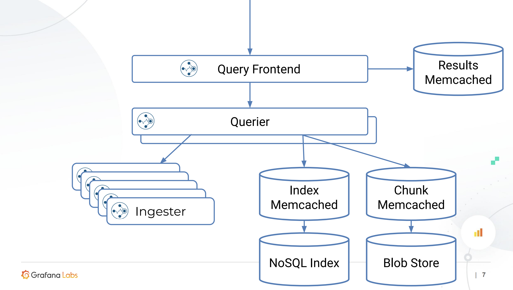

Cortex 简介
Cortex 是weaveworks公司推出的一款针prometheus数据存储的时间序列存储解决方案。
Cortex 解决的主要问题如下:
- 水平扩容
- 高可用
- 多租户
- 长期持久化存储
A horizontally scalable, highly available, multi-tenant, long term Prometheus
Cortex 架构
Cortex 架构

架构解析
数据写入路径:
Prometheus-> Gateway -> Distributor -> Ingester -> DSF/BigTable/S3/Gcs/Chunks/Memcache
采集组件
Prometheus作为一个采集组件，兼容Prometheus的采集生态。通过反项代理做数据接入层网关。 通过Prometheus 的 remote write API 实现数据摄入，并且在 HTTP 请求头中，增加 bear toke 作为租户ID，实现多租户功能。
数据分发组件
写入的数据样本通过distributor组件，实现分发。
查询组件
增加了统一数据查询组件 Querier,和查询优化组件Query Frontend，处理用户请求。
存储组件
当前支持两种类型的存:
- Chunks (default,stable)
- Blocks (experimental)
Chunks Storage
chunks storage 将每个时间序列存储单独存储到一个叫 chunk 的对象中。 chunk 包含了一个时间段(默认12小时)的序列。 Chunks 可以被时间和标签索引，从而提高快速查询能力。
通过把 Chunk 数据 和索引数据分离，可以找到针对这两者的很多替代的底层存储实现。
- Chunks 的索引，可有如下数据库存储:
- Amazon DynamoDB
- Google Bigtable
- Apache Cassandra
- Chunk 数据本身，可由如下数据库存:
- Amazon DynamoDB
- Google Bigtable
- Apache Cassandra
- Amazon S3
- Google Cloud Storage
- Microsoft Azure Storage
可以看到，为了兼容不通的后段存储库，需要抽象一个统一的接口。cortex 将此 接口，成为 “chunks store”。 由于 "chunks store " 只是一种存储chunk 的一种数据契约，可以有很多种实现，因此，这里并没有把其做成一个服务，而是提 供了一个可以嵌入的lib 库。 此Lib库，可以被 ingester,querier 和 ruler引用。
Blocks storage
note: chunk vs block
这里的 block 有多个 chunk 构成
块存储，基于Prometheus的 TSDB: 将每个租户时间序列存储到他们自己的磁盘块文件中， 这些磁盘块默认是2小时一个周期。每个块是由 chunks 和 block index 块索引文件压缩而成。
TSDB 的 chunk 文件包含了多个序列的采样数据。chunk 内的时间序列是被block的索引所索引，这部分索引是对chunk 文件中序列的指标名称和标签做的索引。
这个blocks storage不需要为索引提供专有的后段存储。仅仅需要一个对象存储来存 block file:
- Amazon S3
- Google Cloud Storage
- Microsoft Azure Storage
- Local Filesystem (single node only)
- OpenStack Swift (experimental)
更多的后端块存储 block-storage ，可以参考文档。
Cortex 服务组件
Cortex 是一个基于服务的架构，在这个体系架构中，整个系统被分成执行特定任务的各种组件。这些组件能够独立的并行运行。Cortex 也可以单进程模型的方式运行，所有的组件在一个进程中执行。单进程模式对于本地测试和开发特别方便。
在很大程度上，Cortex 也是一个 shared-nothing 架构的系统。系统的每个层都可以运行每个组件的多个实例，并且各个实例之间不需要协调和相互通信。
服务组件如下:
- Distributor
- Ingester
- Querier
- Query frontend (optional)
- Ruler (optional)
- Alertmanager (optional)
- Configs API (optional)
- Distributor
Distributor
接受来自Prometheus RemoteWrite 过来的数据。做验证，有效的数据会分成 batches 发送给 数据摄入组件 ingesters. 数据校验关键点：
- 指标标签名称是否正确。指标名称命名规范参考
- 符合配置的指标对应标签的最大个数
- 符合配置的 标签名称和Value 最大长度
- 上报的采样数据的时间戳是否在配置限定的时间区间内 (min/max)
Distributors 是无状态的，可以水平扩缩容.
Distributors 有高可用追踪器(High Availability (HA) Tracker)的特点。当启用时，可以对冗余prometheus的采样数据去重。 HATracker 是基于cluster 和 replica的标签进行去重的。cluster 标签唯一标示了一个特定租户的某个集群的 prometheus 实例，而 replica 唯一标识普罗米修斯群集内的副本。 去重逻辑很简单，如果收到的replica 不是集群中当前的主 replica，则认为传入的样本是重复的，从而被丢弃。 HATracker 如何知道那个replica 是主呢？
- Consul
- Etcd
这两种方案的配置，参考 HA 键值对配置
Distributor 如何将数据发送给 ingester ?
通过 Hashing
Distributor 支持两种hash策略，可配置
- 默认通过指标名称和 租户ID做hash
- 通过指标名称，lables 和 租户ID 做hash
Hash 环
所有的 ingester 会向中心注册（kv sttore su as consul or etcd)。 注册时会带上一个 32位的随机数做token , 这个token 决定了一个hash key 的区间， 在此区间的 序列将发送到这个 token 所映射的 ingester。
一致性(Quorum consistency)
为了取保查询的一致性，Cortex 采用了 Dynamo-style, 即, 写入必须等到 超过半数+1 个 ingester 返回成功才算成功
数据摄入组件 Ingester
数据摄入组件，实现输入的序列写入到长期存储的后端服务，并提供热数据(缓存在内存中数据)的查询。
Ingester 收到数据后，并不会立刻到后端存储，而是会在内存中缓存。这样做的好处是
- 对于实时热数据的预计算提供更好的查询性能
- 对与告警策略计算的更友好 也因此，Ingesters 是半状态化的服务。
但这回带来潜在的数据丢失风险，若 ingester 异常挂掉，那么收到数据，在内存中，尚未写入后端存储的数据就会丢失，解决这个问题的办法有两个
- 副本 Replication
- WAL Write-ahead log
Querier
Querier通过PromQL 提供查询服务。Querier 从 ingesters 和 long-term 存储中查询数据，并通过时间戳来做去重
Querier 是无状态的，可以水平做扩缩容。
Query frontend
查询前端是一个 可选的服务，用来加速查询路径。
query frontend 在内部执行一些查询调整，并将其保存在内部队列中。query组件 充当真正的worker , 从队列中提出作业，执行并返回给 query frontend, 以便其 做聚合 查询前端是无状态的，通常会部署两个副本 。
查询前端的队列机制的主要目的：
- 确保大的查询 - 比如可能会造成OOM错误的，返回错误。
- 通过先进先出（FIFO）队列，将多个大型请求分发到所有的查询器上，访问他们被 送往单个查询器上。
- 防止由于其它租户的非
其它查询优化的策略：
- 分割（Spliting） 将一个多天的查询请求拆分成多个单天的查询请求，并行的执行这些请求，在将结果和合并。查询优化的例子如下图

- 缓存(Caching) 查询前端支持缓存查询结果，并在后续查询中重用这些结果. 如果缓存的结果不全，查询前端会计算子查询并会并发执行这些子查询 当前cortex 的缓存后端 支持 memcached, redis , 内存缓存，这些都可以用来缓存查询结果。
查询组件架构如下：

Ruler
Ruler 是一个可选服务，执行PromQL 的查询来 实现预计算和告警。 Ruler 也是一个半状态的组件，可以被水平扩容。
Alertmanager
告警服务，在prometheus alertmanager 之上构建的，增加了多租户的支持。 需要一个数据库来存储租户的配置信息。
Configs API
可选组件，管理 Ruler 和 Alertmanagers 的配置信息。 提供API来对 规则和告警的配置进行增删改查，并将这些信息存储到后端数据库。